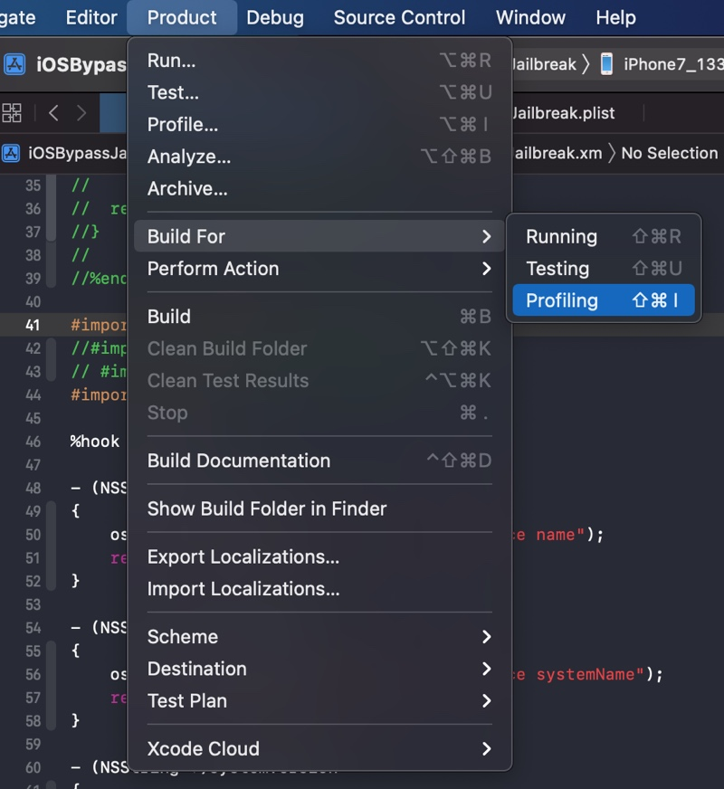
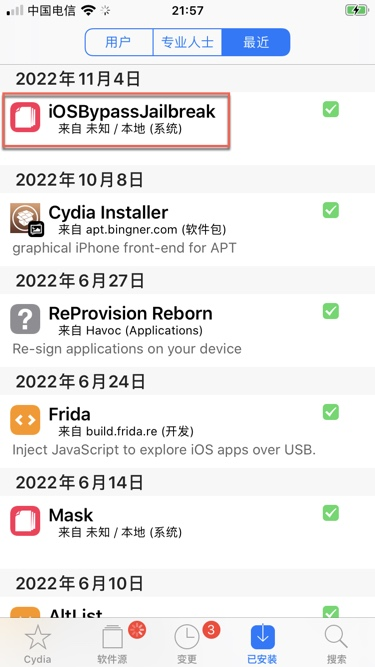
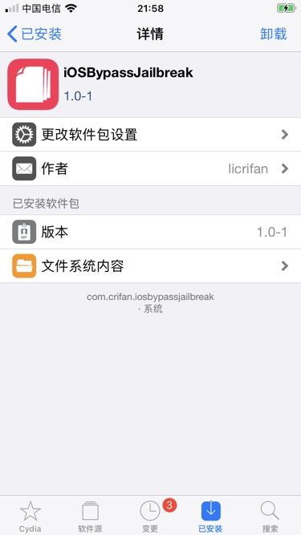
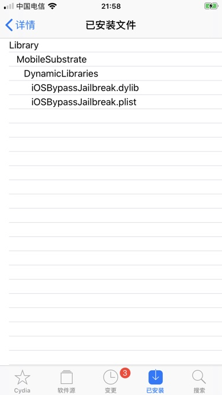
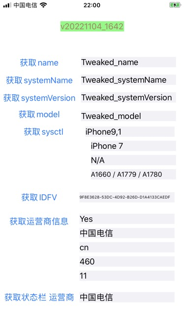

调试插件代码
接下来就是典型的插件开发流程了：
- 写代码 = 写hook代码= 写tweak插件代码 = 改动
.xm文件 - 编译代码 -》 确保语法没错，可以正常编译
Xcode->Product->Build
- 调试和运行 -》 把hook插件代码编译所生成的插件(
.deb文件)安装到iOS设备(iPhone)中，测试插件效果Product->Build For->Profiling- 

确认插件安装成功
- iPhone中看到自己的插件
Cydia->已安装->最近能看到自己的插件：- 
- 点击插件，可以看到插件基本信息
- 
- 点击插件的文件，可以看到文件列表
- 
确认插件的确正常工作
- 打开被测试的=被hook的app，看到此处测试代码：更改信息信息，显示是我们hook代码中的值，表示hook成功
- 
- 查看对应log日志
Xcode->Window->Devices and Simulators->Devices->选中Connected中自己的iPhone设备->Open Console->打开Console=控制台，显示出对应iPhone的log日志- 其中就有你的插件的log日志
- 如果没有，则自己去右上角，搜索对应关键字，即可搜到
- 此处贴出，后续更新了代码后的相关log
- 其中就有你的插件的log日志